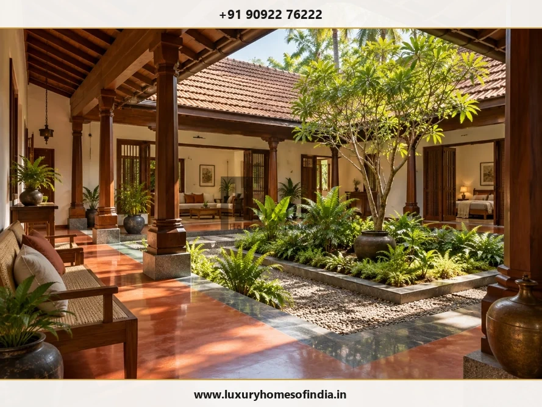
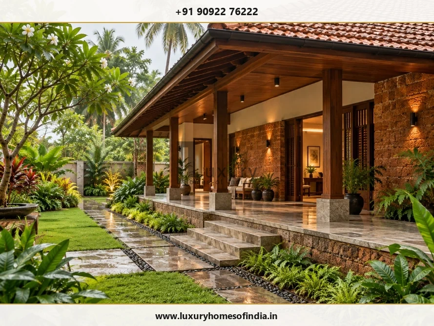

Building a luxury home involves more than estimating the cost per square foot of construction. Your total financial commitment encompasses a complex ecosystem: architectural concept design, structural and geotechnical engineering, site excavation, MEP (Mechanical, Electrical, Plumbing) services, interior joinery, external landscape hardscaping, and municipal regulatory compliance.
A transparent, line-itemized budget provides clarity on what your project requires, identifies where premium materials deliver long-term value, and ensures design decisions align with structural reality before groundbreaking. At Luxury Homes of India (LHI), we guide prospective homeowners through structured financial planning, bridging architectural vision with transparent project delivery across Chennai’s most coveted residential neighborhoods.
1. Understanding total construction budget breakdown
A common financial pitfall in luxury home development is evaluating project cost purely through a singular "per square foot civil rate." Civil structural framing (concrete RCC slab, brickwork, and plastering) typically represents only 35% to 42% of the total investment for a high-end villa.
To establish a realistic financial model, luxury residential construction budgets in Chennai should be categorized across seven primary expenditure pillars:
| Expenditure Pillar | Allocation Range | Included Components & Deliverables |
|---|---|---|
| 1. Architectural & Engineering | 8% – 12% | Architectural concept plans, 3D renderings, structural calculations, soil testing, MEP drawings, landscape design, and statutory CMDA sanction drawings. |
| 2. Site Preparation & Substructure | 6% – 10% | Soil excavation, site dewatering, raft/pile foundation engineering, anti-termite treatment, and underground sump water tanks. |
| 3. Superstructure & Civil Framing | 25% – 30% | Ready-Mix Concrete (RMC M30/M35), Fe550D TMT steel, wire-cut AAC or red brick masonry, waterproof plastering, and parapet structures. |
| 4. MEP & Smart Home Infrastructure | 15% – 18% | Concealed plumbing, electrical wiring, VRV/VRF air conditioning piping, solar power integration, home automation conduits, and acoustic DG backup systems. |
| 5. High-Performance Fenestration | 8% – 12% | Thermal-break slimline aluminum sliding doors, double-glazed laminated glass (DGU), motorized louvers, and main teak entrance door assemblies. |
| 6. Turnkey Luxury Interiors & Finishes | 22% – 28% | Book-matched Italian marble, teak joinery, custom modular kitchens, sanitaryware (Kohler/Gessi), panelling, and decorative lighting execution. |
| 7. External Development & Landscape | 5% – 8% | Perimeter compound wall engineering, automated driveway gates, granite hardscaping, swimming pool installation, and green courtyards. |
2. Realistic cost per square foot benchmarks in Chennai
Construction costs vary significantly based on material specifications, structural spans, and custom architectural detailing. In Chennai, luxury home construction can be categorized into two primary tiers:
Tier 1: Luxury Standard Residential Build (₹3,800 – ₹5,200 / sq. ft.)
Recommended for high-end gated community villas and spacious urban residences. This tier delivers an exceptional balance of structural permanence and refined interior aesthetics:
- Structure: Standard isolated footing or raft foundation with RCC frame designed for seismic zone III.
- Flooring: Large-format premium vitrified tiles (1200x2400mm) or native Indian marble (Makrana/Greco) in primary living zones.
- Fenestration: High-grade powder-coated aluminum sliding windows with single toughened glass.
- Woodwork: Engineered wood or teak veneer doors with concealed magnetic mortise locks.
- Sanitaryware: Grohe or Kohler concealed fittings with wall-hung ceramic WC units.

Tier 2: Ultra-Luxury & Bespoke Architectural Build (₹5,500 – ₹9,500+ / sq. ft.)
Designed for signature oceanfront estates along ECR, exclusive plots in Boat Club and Poes Garden, and custom multi-generational family compounds:
- Structure: Heavy-duty raft/pile foundation with anti-corrosive epoxy-coated TMT bars and water-repellent concrete additives.
- Flooring: Imported book-matched Italian marble (Statuario, Bottochino, Michel Angelo) laid over anti-fracture membranes with mirror polishing.
- Fenestration: Minimalist thermal-break double-glazed aluminum systems (Schüco, Reynaers) providing thermal insulation and acoustic dampening against coastal winds.
- Joinery & Timber: First-grade solid Burma Teak wood door frames, wall panelling, and customized solid timber ceilings.
- HVAC & Automation: Centralized VRV/VRF ductless air conditioning with integrated KNX smart lighting and climate controls.
3. Critical site-responsive factors influencing Chennai budgets
Chennai’s unique geographic and climatic landscape directly influences construction techniques and material selections. Accounting for local environmental realities during early budgeting prevents severe cost overruns:
A. Coastal Salinity & High Water Table (ECR / OMR / Neelankarai)
Building along East Coast Road (ECR) requires specialized marine-grade foundation civil work. The high water table demands continuous sub-surface dewatering pumping during excavation. Furthermore, saline air accelerates steel corrosion. Budgets along ECR must include:
- Corrosion Inhibitors: Polymer-modified slurry coats and epoxy-coated TMT steel bars to prevent concrete rebar spalling.
- Advanced Waterproofing: Crystalline waterproofing membranes for basements, underground sumps, and retaining walls.
- Corrosion-Resistant Hardware: SS 316 marine-grade hardware for external railings, glass patch fittings, and lighting fixtures.

B. Tight Urban Logistics (Anna Nagar, Boat Club, R.A. Puram)
Constructing in dense, established Chennai residential sectors involves space constraints for material staging. Ready-Mix Concrete (RMC) trucks and mobile cranes require specialized traffic management and night pouring approvals. Factoring municipal temporary access permits, compact site office setups, and noise barrier enclosures ensures smooth site operations without neighborhood disputes.
4. Common budgeting pitfalls and how to avoid them
Even meticulously planned projects can experience financial friction if key non-construction costs are overlooked during early estimation:
- Unscoped Interior Interfaces: Civil contractors frequently leave plumbing, electrical box drop heights, and ceiling drop pockets unspecified, leading to expensive modification work when interior contractors commence installation. Partnering with a turnkey architecture and interior firm like LHI eliminates interface conflicts.
- Omission of Temporary Utilities & Statutory Fees: CMDA development charges, Greater Chennai Corporation (GCC) building sanction fees, temporary TNEB commercial power connections, and metro water sumps can aggregate to ₹4 Lakhs - ₹12 Lakhs depending on built-up area.
- Inadequate Soil Testing & Foundation Oversights: Skipping preliminary geotechnical soil boring tests can lead to under-engineered or over-engineered foundations. A ₹25,000 soil test dictates whether an economical isolated footing suffices or if an expensive deep raft foundation is mandatory.
- Unplanned Mid-Construction Design Modifications: Changing floor plan layouts, window sizes, or tile selections after RCC slab casting creates cascading rework costs. Resolving 100% of spatial designs in 3D prior to groundbreaking is the single most effective cost-containment strategy.
5. Step-by-step cost management strategy for luxury homeowners
To maintain complete financial control over your luxury construction journey in Chennai, implement this 4-phase cost management framework:
Phase 1: Pre-Design Feasibility & Soil Audit (Month 1)
Conduct site contour mapping, soil bearing capacity testing, and statutory setback verification. Establish a baseline ceiling budget with your architectural consultant.
Phase 2: Comprehensive Bill of Quantities (BOQ) (Months 2–3)
Insist on a fully itemized BOQ detailing brand specifications, material grades, unit measurements, and execution labor rates rather than a lump-sum estimate.
Phase 3: Fixed-Price Contractual Appointment (Month 4)
Execute a comprehensive construction contract with defined milestone schedules, quality inspection checkpoints, and clear price-escalation caps for core materials (cement & steel).
Phase 4: Structured Milestone Payments & Site Audits (Construction Phase)
Release payments strictly against physical measurement validation by an independent site engineer or lead architect.